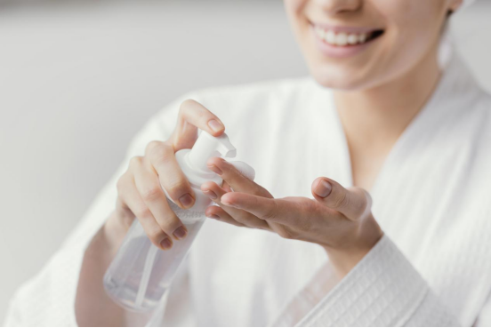
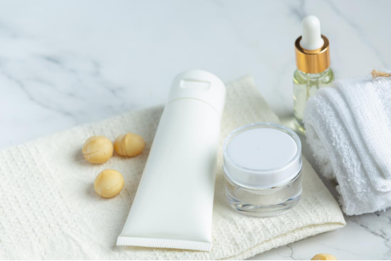

Industry Information
Dec. 18, 2024
Surfactants play a pivotal role in modern personal care products, ensuring their efficacy and user satisfaction. Among the various types, non-ionic surfactants stand out for their versatility and mildness, making them a preferred choice in products ranging from shampoos to skincare formulations.
To understand non-ionic surfactants, we must first grasp the broader category of surfactants. Surfactants are chemical compounds that reduce surface tension between two substances, such as oil and water, enabling them to mix more easily. These are broadly classified into four types:
Anionic Surfactants: Carry a negative charge and are often used for their powerful cleaning and foaming properties.
Cationic Surfactants: Carry a positive charge, known for their antimicrobial and conditioning abilities.
Zwitterionic Surfactants: Possess both positive and negative charges, providing mildness and compatibility with other surfactants.
Non-Ionic Surfactants: Do not carry any electrical charge, making them neutral in nature.
Non-ionic surfactants are characterized by their lack of charge in their hydrophilic (water-attracting) head. Their chemical structure typically consists of a hydrophobic (water-repelling) tail linked to a hydrophilic head, often through ether or ester bonds. The absence of a charge minimizes interactions with ions in water, such as calcium and magnesium, giving them excellent stability in hard water and extreme pH conditions.
Non-ionic surfactants are generally milder and less irritating, making them ideal for sensitive skin.
They have lower foaming capacity but excellent emulsifying and solubilizing properties.
Unlike ionic surfactants, they are less affected by water hardness or pH changes.
Non-ionic surfactants perform several essential functions in personal care formulations:
Cleansing: They effectively remove dirt, oil, and impurities from the skin and hair without causing excessive dryness.
Emulsification: These surfactants stabilize emulsions, enabling oil and water-based ingredients to mix seamlessly, as seen in lotions and creams.
Solubilization: Non-ionic surfactants help dissolve water-insoluble ingredients, such as essential oils and fragrances, ensuring even distribution in the product.
Mildness: Their gentle action makes them suitable for products targeting sensitive skin and baby care.

Personal care products employ a variety of non-ionic surfactants, each tailored to specific functions. Here are ten commonly used non-ionic surfactants, including their roles in formulations:
Laureth-7: A polyethylene glycol ether of lauryl alcohol, Laureth-7 is a gentle emulsifier and solubilizer used in shampoos and conditioners for a smooth feel.
Alkyl Polyglucoside (APG): Derived from natural sources like glucose and fatty alcohol, APGs are eco-friendly surfactants found in facial cleansers and body washes for their mildness.
Polysorbate 20: An emulsifier used to blend essential oils into water-based products such as toners and serums.
Decyl Glucoside: A biodegradable surfactant popular in sulfate-free shampoos and cleansers for its gentle cleansing properties.
Ceteareth-20: Often used in creams and lotions, it acts as an emulsifier to create stable, smooth formulations.
Sorbitan Oleate: A plant-derived emulsifier found in moisturizers, ensuring a rich and even texture.
Coco Glucoside: A mild surfactant used in baby shampoos and sensitive skin cleansers.
PEG-40 Hydrogenated Castor Oil: A solubilizer in fragrances and essential oil-based products.
Steareth-2 and Steareth-21: Used together in creams and lotions to enhance emulsification and improve texture.
Cetyl Alcohol: A fatty alcohol that provides moisturizing properties while stabilizing emulsions in skincare products.
Yes, non-ionic surfactants are typically gentle and non-irritating, making them an excellent choice for sensitive skin or products designed for children.
No, glycerin is not a surfactant. It is a humectant, which means it attracts and retains moisture in the skin.
Surfactants enable effective cleansing by emulsifying and solubilizing oils, dirt, and impurities. They also help stabilize emulsions and distribute active ingredients uniformly.
No, baking soda (sodium bicarbonate) is not a surfactant. It is an alkaline compound often used as a mild abrasive or deodorizing agent in personal care.

Non-ionic surfactants are indispensable in the personal care industry due to their mildness, stability, and versatility. From shampoos and cleansers to lotions and serums, these compounds enhance product performance and user satisfaction while catering to sensitive skin and eco-conscious consumers.
Tianjin Chengyi Chemical Trade Co., Ltd. (GOLIATH) is a trusted supplier of high-quality surfactants and various chemical. With a strong global network and a commitment to sustainability, we provide tailored solutions for various industries, including personal care. For inquiries about non-ionic surfactants or other specialty chemicals, please contact us. Let us partner with you to deliver safe, efficient, and innovative products to your customers.

Goliath Ingredients Holding Limited
1st Floor, Ellen Skelton Building, 3076 Sir Francis Drake’s Highway, Road Town, Tortola, VG1110, British Virgin Islands.
henry@goliathholding.com
Navigation
Email: henry@goliathholding.com